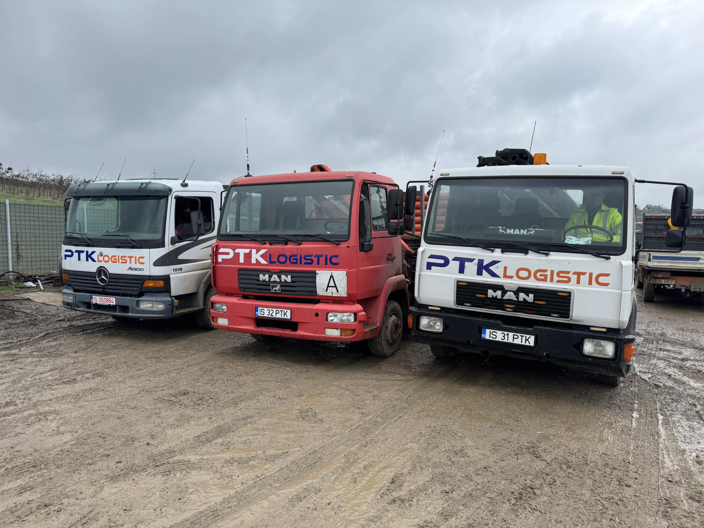
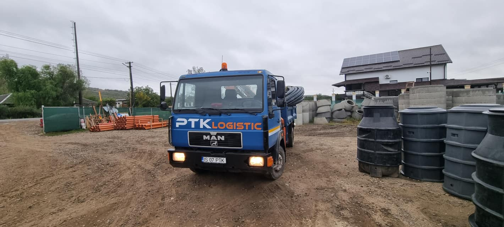

Excavator compact, ideal pentru lucrări de săpături în spații restrânse și șantiere rezidențiale.
Excavator de 7,5 tone, perfect pentru lucrări de terasamente, fundații și amenajări exterioare.
Miniexcavator robust și eficient, potrivit pentru lucrări de utilități, grădini și șantiere de dimensiuni medii.
Camion versatil, echipat cu macara, ideal pentru transport materiale de construcții și echipamente grele.
Transport rapid și sigur pentru utilaje și materiale pe șantier.
PTK Logistic este partenerul tău de încredere în domeniul construcțiilor. Oferim servicii de închiriere excavatoare, camioane cu macara și alte utilaje esențiale, adaptate fiecărui proiect. Ne bazăm pe experiență, promptitudine și utilaje moderne pentru a susține fiecare șantier cu echipamente performante.